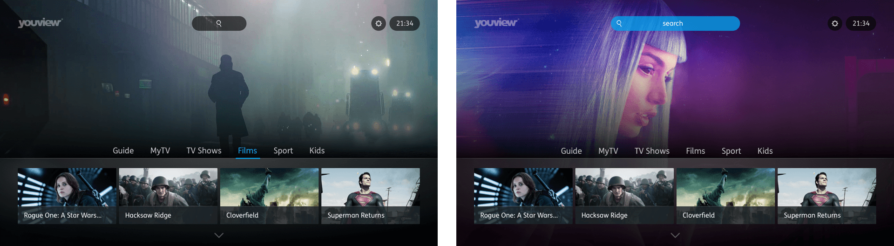
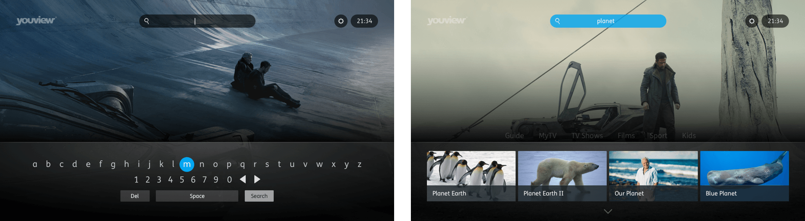
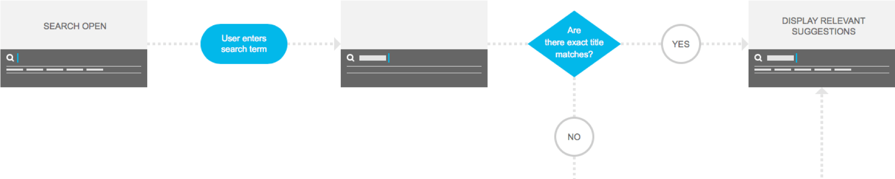

The ability to search for tv shows and films from the entire range of YouView content providers is a key USP for the service. As such, the future vision of the search feature is at the heart of the overall experience.
A range of UI designs were conceived, from which interactive prototypes were created to showcase how users could interact with on screen keyboards and search results.
 The use of data to inform how users currently perform searches, what kind of search terms they use and what types of content they look for was key to shaping how the feature could be developed and adapted going forward. Emerging technology, such as voice control, also had to be taken into account.
An example of one of the Framer prototypes created, showing how a global search feature could be entirely redesigned to sit at the top of the screen and allow users to invoke an on-screen keyboard when the search field is activated.
This prototype was created to test the idea of allowing users to transition from a simple set of search results to a full screen piece of UI which could handle in-depth results, broken down into sub-categories.
This one was created to show how nesting recommendations, new additions and promoted content within the existing search feature may ve utilised to further increase content consumption across the platform.
A series of flow diagrams were needed to determine how the back-end functionality could make use of approximate matching techniques to remove pain points, particularly for users who struggle to use tv remote controls for text input. An issue which we had observed many times within user research sessions.
